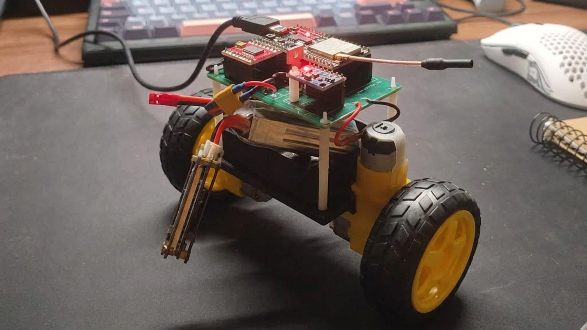
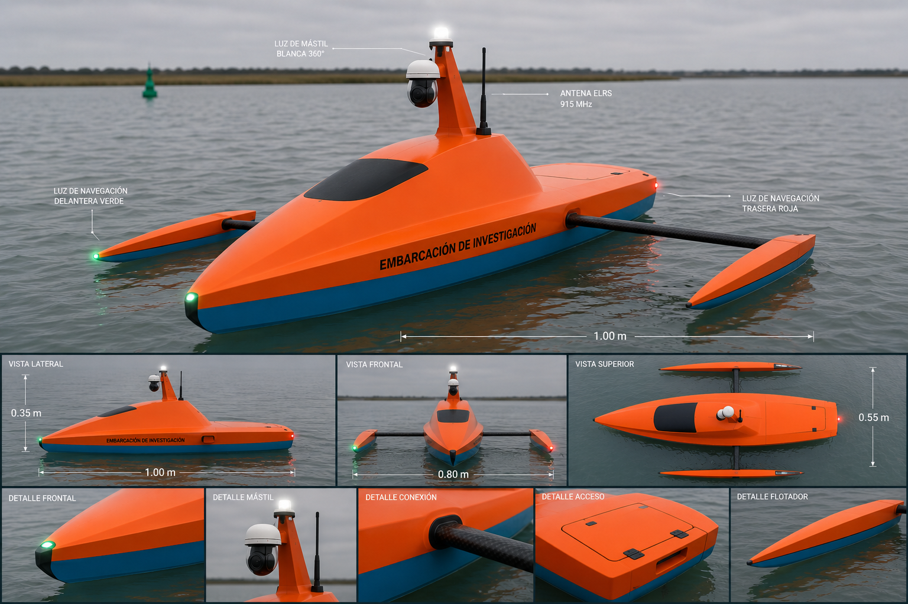

Jetson Racer
- Cámara en la Jetson
- Vídeo por red
- Portátil: OpenCV + ONNX
- Dirección y aceleración
- Jetson acciona el coche
Coche a escala con una Jetson Nano. Conduce a partir de lo que ve su cámara.
Una U-Net entrenada en PyTorch con dos salidas: circuito y obstáculos. El modelo se exporta a ONNX.
La Jetson manda el vídeo por red a un portátil. Allí OpenCV y ONNX calculan dirección y aceleración, y la Jetson acciona el coche. También admite mando manual.
Límite: la latencia de red condiciona el control. Aún no hay una evaluación formal de FPS ni de latencia.
Sumo Vision
- ESP32-CAM
- Vídeo UDP :5005
- Ordenador: Python + OpenCV
- Órdenes UDP :9999
- ESP32 del robot: motores
Un robot de sumo reutilizado como prototipo quitanieves: localiza obstáculos dentro de un área delimitada y los saca de ella.
Una ESP32-CAM envía vídeo por UDP al puerto 5005. En el ordenador, Python y OpenCV detectan las líneas del área y los obstáculos, y deciden la maniobra.
Las órdenes vuelven por UDP al puerto 9999 hasta la ESP32 del robot, que mueve los motores. Tiene modo automático y modo manual.
Resultado: retiró obstáculos de forma autónoma, como se ve en el vídeo.
Eggbots
- Diseño 3D
- PCB
- Integración electrónica
- Software de control en C++
Robot de combate de sumo, construido en equipo.
Mi parte: diseño 3D, PCB, integración electrónica y software de control en C++.
Primer puesto en el torneo [torneo, fecha].
Péndulo invertido

- MPU6050
- Filtro complementario
- PID, FreeRTOS, 100 Hz
- Puente H: 2 motores DC
- Servidor web: telemetría
Robot de dos ruedas que se mantiene en equilibrio. De este proyecto no hay vídeo todavía: solo esta foto.
Una ESP32 lee la MPU6050, acelerómetro y giroscopio, y combina las dos medidas con un filtro complementario.
Un PID corre en una tarea de FreeRTOS a 100 Hz y mueve dos motores DC con un puente H. Si la inclinación pasa de 30° durante más de 1 s, corta los motores.
Un servidor web muestra la telemetría y deja ajustar parámetros. Pendiente: validar la estabilidad con medidas cuantitativas.
En planteamiento, sin rodar
USV
Vehículo de superficie no tripulado. Es un proyecto personal: todavía no hay metraje, solo un guion de trabajo.

Hecho
Pruebas básicas con ArduPilot en un tanque y en un dron.
Siguiente
Navegación con piloto automático y telemetría.
Después
Visión artificial.
Créditos
- Lenguajes
- Python, C, C++, MATLAB
- Visión y aprendizaje
- PyTorch, OpenCV, ONNX
- Robótica
- ROS, ArduPilot
- Hardware
- ESP32, Jetson Nano, KiCad
- Sistema
- Linux, Docker
Contacto
Juan José Prado Neira. Lugo, Galicia.